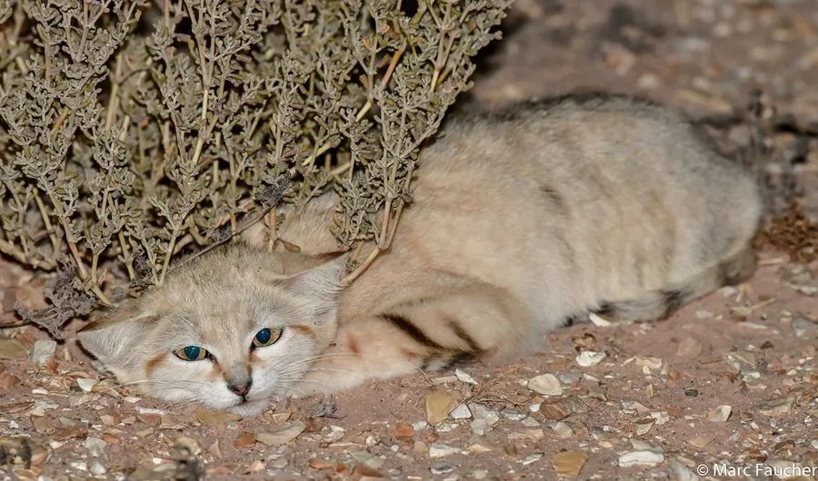

哺乳动物 · 动物界
沙猫 Felis margarita

沙漠地带的小型猫科，脚掌覆毛隔热、耳朵大而低位，能在缺水的荒漠中长时间不饮水，昼伏夜出捕食鼠类。
- 分类
- 门脊索动物门纲哺乳纲目食肉目科猫科属猫属
- 栖息环境
- 北非、阿拉伯半岛和中亚的沙漠、半荒漠与沙丘
- 地理分布
- 撒哈拉沙漠、阿拉伯半岛及中亚的沙漠地区
- 保护级别
- IUCN 无危（LC）
物种志
沙猫体长 0.39–0.52 米，尾长 0.23–0.31 米，体重 1.5–3.5 kg。它的被毛为沙黄色，与沙漠环境融为一体，头部宽阔、耳朵大而位置低，便于在沙丘间隐蔽；脚掌覆有厚毛，既隔热又便于在松软沙地上行走，爪不能完全缩回。
沙猫分布于北非、阿拉伯半岛和中亚的沙漠、半荒漠和沙丘地带，从撒哈拉沙漠到中亚的卡拉库姆沙漠都有分布。它是夜行性独居猎手，捕食沙鼠、跳鼠、蜥蜴、昆虫和鸟类，能在缺水的环境中依靠猎物获取水分，长时间不饮水。沙猫白天躲在洞穴或岩石阴影中，夜间活动范围可达数平方千米。雌性妊娠期约 60–68 天，每胎 2–5 仔。由于栖息地退化和人类活动干扰，沙猫数量有所下降，目前被列为无危。
形态与习性
- 食性沙鼠、跳鼠、蜥蜴、昆虫与鸟类
- 体长0.39–0.52 m，尾长 0.23–0.31 m
- 体重1.5–3.5 kg
- 寿命野外约 10 年
- 繁殖妊娠期约 60–68 天，每胎 2–5 仔
- 脚掌覆厚毛，隔热并适合在松软沙地行走
- 活动节律夜行独居
趣味知识
- 沙猫脚掌覆有厚毛，既能隔热，又方便在松软沙地上行走。
- 它的耳朵大而位置低，便于在沙丘间隐蔽并保持听力。
- 沙猫能长时间不饮水，主要靠猎物摄取水分。
- 它的毛色与沙地几乎一致，是很好的保护色。